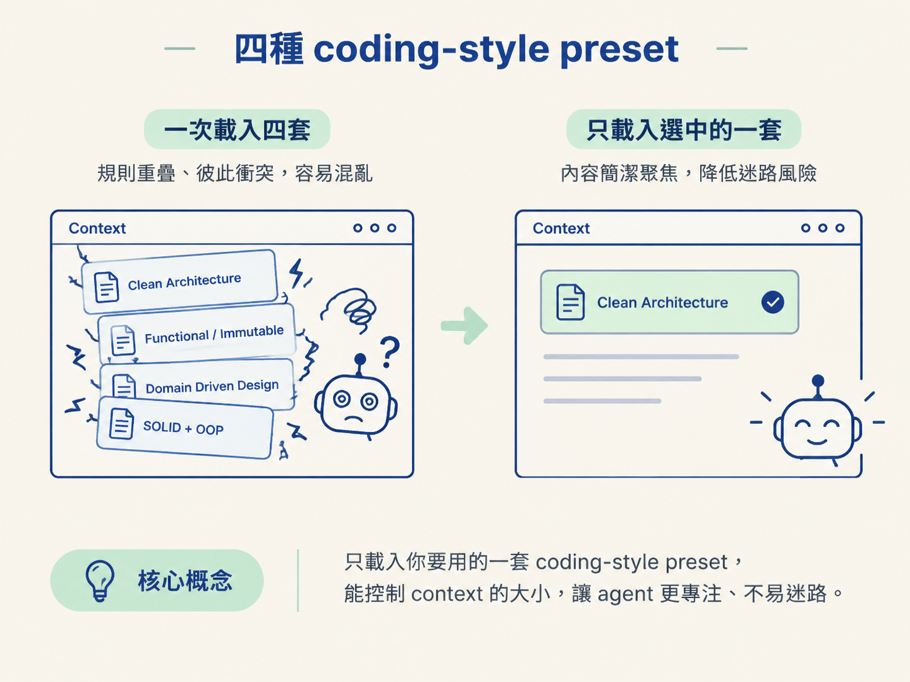
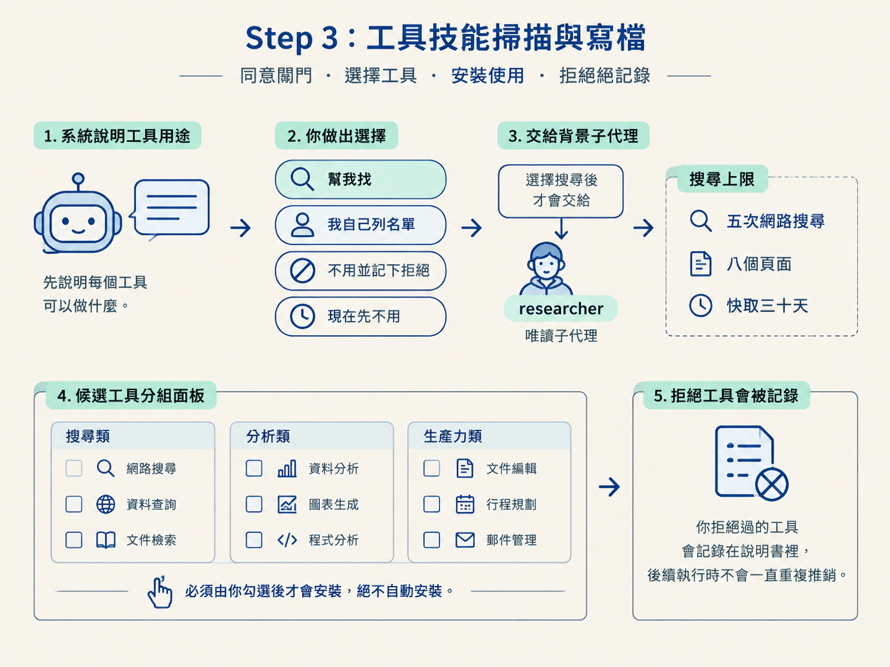

完成 Phase 1 的決策面板，從四種 coding-style preset 中選定一套風格，並把結果寫入 root AGENTS.md 的 ## Rules。同時正確處理 ## Git、## Stack、## Build approach 與 mirrored fields。
如果專案才剛 scaffold 完，技術棧已經決定，但真正的功能碼還沒開始累積，這正是把開發慣例談清楚的時機。現在多花幾分鐘做選擇，之後每個 agent、每位開發者都能沿著同一條軌道前進。
等到幾十個檔案已經各自長出不同的寫法，才回頭統一架構、命名和工具鏈，就像房子蓋好後才想重新安排承重牆，成本會高得多。
上一節的 pre-flight 如果判定專案是空白專案，或是剛 scaffold 完、只有技術骨架而沒有說明書的專案，就會進入 Phase 1，也就是 greenfield setup。
這條路線和其他三條不一樣：它會主動把整套慣例攤開來問你。whole-repo 和 gap-fill 會先觀察現有程式碼再補文件，area 只處理指定區域；greenfield 則趁「還沒有既成習慣」時，一次把重要決策定下來。
Phase 1 有兩種觸發情境：
WORKFLOW_SETUP 情境。這裡有一個容易誤判的地方：專案裡就算已經有 manifest 和骨架原始碼，Phase 1 仍然會把它視為新專案，照樣進行問答。
因為那些檔案只是 scaffold 的產物，不代表專案已經形成一套開發慣例。判斷重點不是「資料夾裡有沒有檔案」，而是「是否已經有一套明確、可供後續工作遵循的規則」。
Phase 1 不會先丟一份完全通用的問卷給你。它會先讀過真實的 scaffold，包括 manifest、設定檔和已安裝的工具，接著依照專案現況客製化問題。
已經由技術棧決定的事情就不再問。例如，若專案使用沒有型別系統的 JavaScript，型別嚴格度這一題會直接跳過。已經安裝好的工具則會排在選項第一個，並標示為建議選項。
問題中的語言與框架用詞也會跟著實際專案調整，而不是拿一份與環境無關的固定問卷硬套。
提問會以「決策面板」進行，每一輪最多四個面板，需要幾輪就問幾輪。每個面板都有兩個固定設計：
「恰好一個建議」不是把決定權交給 agent，而是降低選擇成本。你仍然可以選其他選項，但不必面對一排看起來同樣合理、卻沒有方向的答案。
strict（不用 any、型別完整）、gradual（新程式碼從嚴要求）或 loose。這一題只會出現在有型別系統的語言中。folder-by-feature（按功能聚集）、by-layer（依 controller、service、repo 分層），或沿用 scaffold 現有結構。工具鏈面板有一個界線要記住：/audit 只負責記錄選擇，不負責安裝。
套件安裝、設定檔、pre-commit hook 和 CI 都是後續 /develop tooling 才會處理的工作。這裡先把選擇定下來，是因為決策還在手上時，最容易確認團隊想要的方向。
這個分工也避免一個常見風險：在你只是想記錄決策時，agent 卻順手安裝套件、修改設定，讓「選擇」和「執行」混在一起。
架構風格面板提供四套預先寫好的程式慣例。選定後，只有被選中的 preset 會讀進 context，並成為 root AGENTS.md 的 ## Rules 基礎。
這種做法能控制 context 的大小：不是把四套完整規則全部塞進每一次對話，而是先選定真正要用的一套，再只載入那一套。少一點無關內容，agent 就比較不容易在互相衝突的規則之間迷路。

| Preset | 核心主張 | 適合什麼 |
|---|---|---|
| Clean Architecture | 嚴格分層，領域邏輯不碰框架與 I/O | 複雜且穩定的業務規則 |
| Functional / Immutable | 純函式優先、資料不可變，將副作用推到邊緣 | 重視可預測性與可測試性的邏輯 |
| Domain Driven Design | 顯式建模業務領域，使用 bounded context 與 aggregate | 複雜且持續演進的業務邏輯 |
| SOLID + OOP | 採用經典物件導向與 SOLID 五原則 | 以類別與依賴注入為主的後端 |
以 Clean Architecture 為例，它會把程式碼分成四層：
domain：實體與值物件。application：使用案例。infrastructure：資料庫、API 與框架。presentation：UI 與 controller。分層之後，最重要的規則是：依賴方向只能由外往內，內層永遠不能依賴外層。因此，domain 可以完全沒有外部匯入，商業規則也不會被框架或資料庫綁住。

這套 preset 還包含幾項更細的約束：
domain 與 application 不得出現框架或 ORM 程式碼。如果你選擇具名 preset，Phase 1 最後會把它解析成該 preset 檔案的絕對路徑。對話中只帶路徑，不會把完整內容貼進來。
如果你選「其他」並自行輸入文字，這段內容會被一字不改地放進 ## Rules。它不會被改寫，也不會被 agent 重新詮釋。
這是重要的保護線：你親自整理過的 curated prose 不應該在寫檔時被「優化」成另一種說法。否則表面上規則還在，實際語意可能已經被改掉。
慣例問完後，Phase 1 會掃描 Agent Skill 與 MCP server。這裡有一個明確的同意閘門：
詢問是必要的，搜尋不是。
在你明確選擇「幫我找」之前，系統不會搜尋、不會安裝，也不會連線任何東西。它會先說明工具的用途：
接著會提供四個選項：
如果你選擇搜尋，工作會交給背景執行的唯讀 researcher 子代理，並使用便宜、快速的模型。這樣主要對話不必同時承擔搜尋工作，也不會讓研究結果直接修改專案。
搜尋有明確上限：最多五次網路搜尋、八個頁面，結果快取三十天，避免每次執行都重複花費。
候選工具會分組呈現在面板中，必須由你勾選後才會安裝，絕不自動安裝。你拒絕過的工具也會記錄在說明書裡，後續執行時不會一直重複推銷。

寫 root AGENTS.md 時，## Stack 與 ## Build approach 是兩個特殊欄位。它們不是 /audit 自己推測或編寫的內容，而是鏡射自其他來源，因此稱為 mirrored fields。
| 欄位 | 唯一來源 | 來源不存在時 |
|---|---|---|
## Stack | docs/specs/ 中帶有 ## Proposed stack 的架構規格 | 先依程式碼與 manifest 判斷；若仍無法取得，就留待填寫 |
## Build approach | scope 標頭中的 build approach 那一行 | 保留 <TBD, set by /scope> |
寫入時遵守三條規則：
第三條尤其重要。自動挑一邊看似省事，卻會把真正的規格衝突藏起來。正確做法是留下可追查的差異，讓人決定哪個來源才應該更新。
這種設計也讓 /architect 到 /audit 的交接不受執行順序影響。無論哪個階段先跑，root 最後都能吸收已經決定的技術棧，而不是靠 agent 猜測。
Git 整合面板的答案會寫成一個小型 ## Git 區塊，例如：
integration: onbranch prefix: feat/commit: per-milestoneintegration: off這個區塊只是記錄偏好，不會把所有 Git 操作混進 /audit。之後，/develop 可以依照它決定如何開分支與提交，/document 也能知道什麼時候該擋 PR。
有一個實際例外：如果你選擇 integration: on，但專案還不是 git repo，且 git rev-parse 失敗，Phase 1 會當場執行 git init，讓 repo 從啟用整合的那一刻起就存在。
如果 pre-flight 偵測到 monorepo，AGENTS.md 的寫法會調整。
root 只保留跨 workspace 的共通行為，例如整體套件管理器、任務執行器、共享標準，以及一個指向各 workspace 文件的 ## Context files 區塊。
每個 workspace，例如 apps/* 或 packages/*，則在自己的根目錄取得一份輕量 stub，記錄自己的技術棧與指令。
即使某個 workspace 還沒有功能，只要 scaffold 已經宣告它的技術棧與指令，就值得先寫進自己的文件。之後的 /architect 與 /develop 便能從該 workspace 的脈絡開始，而不是每次都從 root 猜測。

Phase 1 完成時，你應該能確認以下結果：
## Rules 的基礎。## Stack 和 ## Build approach 只從各自來源鏡射，不覆寫既有內容。## Git 記錄分支與提交偏好；需要時初始化 git repo。Phase 1 是唯一會主動詢問整套開發慣例的路線，適用於空白專案或剛 scaffold 完的工作流設定情境。它先讀取真實 scaffold，再用決策面板詢問架構風格、型別、資料夾結構、程式標準與工具鏈；每個面板恰好有一個建議選項。
/audit只記錄選擇，不負責安裝。架構風格從四套 preset 中選一套，選中的慣例成為
## Rules；若選「其他」，自訂文字原封不動保留。## Stack與## Build approach只鏡射各自來源，## Git記錄分支與提交偏好。monorepo 則由 root 保存共通規則，每個 workspace 各自保留輕量 stub。
完成這一步後，root AGENTS.md 就不再是一張空白紙，而是一份可被後續階段讀取的決策紀錄。接下來要處理的，是另一種更常見的專案：已經跑了一段時間，卻沒有說明書可讀。那時 agent 不會再先問你整套慣例，而是要先讀完整個 codebase，再判斷哪些知識值得留下、哪些區域需要自己的 nested 文件。